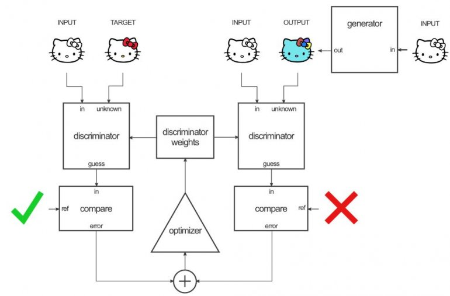
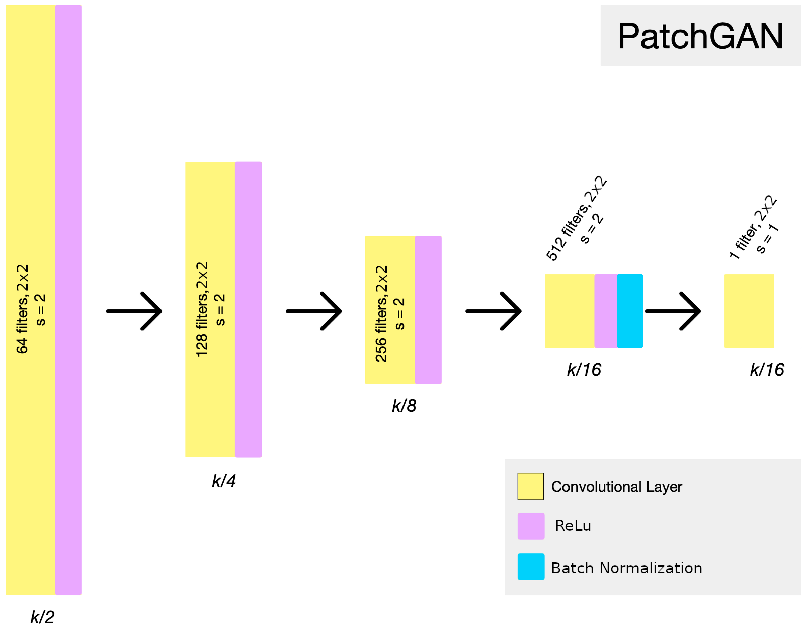

General architecture
The goal of this project is to separate two entangled lines of text. To do this, the project uses a GAN to try to generate a pixel-level segmentation of the two lines, separated.
In order to obtain this result, I use an architecture heavily inspired by the amazing paper Pix2Pix. This article presents an extremely flexible GAN architecture that can be used for almost any image transformation problem. This architecture is presented in the following diagram:
For the loss, I use an MSEloss between the matrix outputted by the discriminator and a reference matrix full of 0.0 (if the image is created by the generator) or 1.0 (if the image is real). This is inspired by the LSGANs. Taking once again inspiration from Pix2Pix, I add an L1 loss between the generated image and the target image to accelerate the training of the generator.
The implementation is done in Pytorch.
Generator
For the generator I use a U-Net architecture.
U-Net is a well-known architecture for image segmentation. It uses a fully convolutional encoder-decoder architecture with explicit residual connections. This allows U-Net to take into account high-level features without losing the low-level features with high spatial resolution present in the original images.
U-Net works with upconvolution and downconvolution blocks connected symmetrically, which is why it is often represented with a U shape, for example in the following diagram:

In this implementation I added padding in the deconvolution blocks to avoid the reduction in the image size. I also added batch normalization and dropout with a probability of 0.5 before the last layer. The goal of these operations is to respectively accelerate training and avoid overfitting.
One important issue with U-Net is linked with the explicit residual layers. As the image is succesfully exposed to down-convolutions and up-convolutions, its size is divided by two for each downconvolution block, the multiplied by two for each upconvolution block. At the end of each up-convolution block the up-convolved image is concatenated with the down-convolved image from the symmetrical block. Therefore, they need to be exactly the same size. In my model, I use 4 downconvolution blocks. This means the image width and length are divided by 16, then multiplied by 16. If the image width or height is not divisible by 16, there is a problem during the concatenations. Therefore the width and the height of any image used as input must be divisible by 16. However this is not a problem as it is possible to zero-pad the image, process it, then remove the padding. It does however force to be cautious with the inputs of the architecture.
Discriminator
The discriminator used is very similar to the PatchGan from Pix2Pix, with slight modification. In general, it is a simple convolutional neural network, with batch normalization before the last layer.
